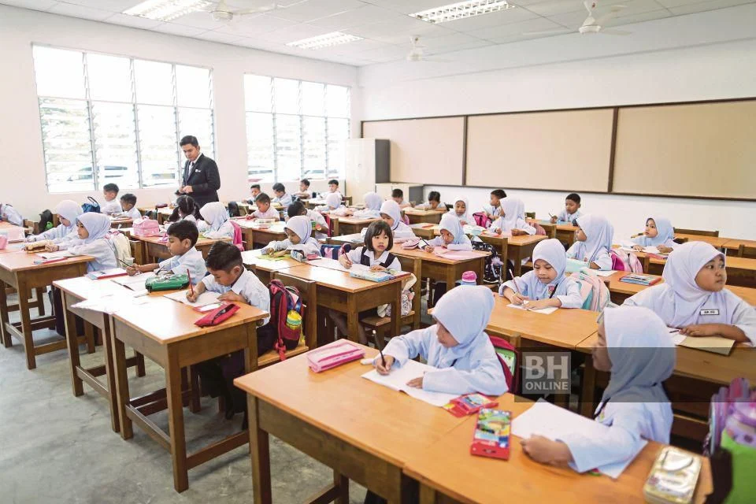
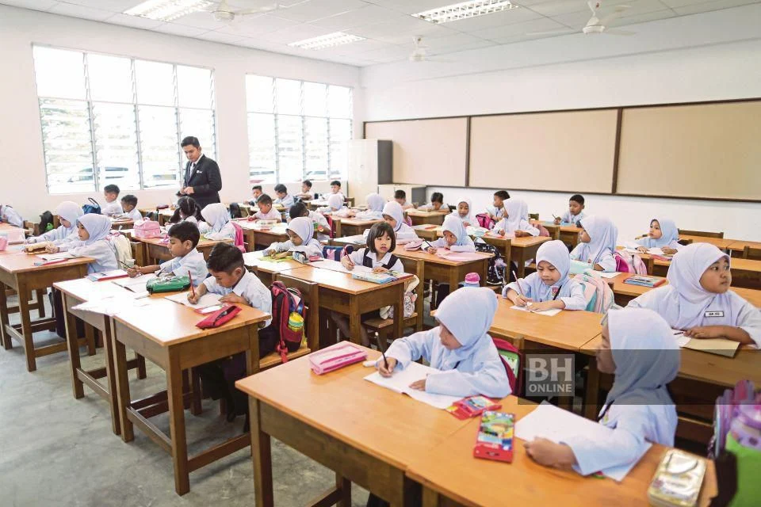

PERAN MASYARAKAT
Ternyata potensi-potensi yang dimiliki Indonesia lumayan tinggi dan dapat kita dukung lebih dalam bersama dengan masyarakat sekitar. Masyarakat dan komunitas Indonesia tentunya memiliki suara yang berhak untuk didengar dan dilakukan karena negara Indonesia yang bersifat demokratis. Oleh sebab itu, yuk kita lihat peran masyarakat ada apa aja sih untuk mendukung kualitas pendidikan yang lebih unggul?
Bentuk yang pertama adalah program gotong royong. Program ini dapat dilaksanakan dengan membangun, memperbaiki, dan merawat fasilitas dan infrastruktur sekolah yang dibutuhkan. Seperti ruang kelas, perpustakaan, ataupun lapangan olahraga. Dengan adanya program ini, siswa maupun tenaga kependidikan lainnya dapat merasa nyaman dan efektif saat pembelajaran. Selanjutnya adalah mengawasi dana pendidikan, transparansi dalam pengelolaan dana, serta akuntabilitas. Pengawasan terhadap dana pendidikan dari pusat, pemerintah, maupun sekolah, digunakan sesuai dengan kebutuhannya, sehingga dapat terhindar dari korupsi atau kecurigaan. Berikutnya adalah membentuk pengajaran ekstra/les/bimbel. Program tersebut dilaksanakan untuk mendukung dan mengajar siswa yang masih kurang mengerti dengan pembelajaran yang di kelas ataupun untuk mengoptimalkan mata pelajaran tersebut. Masyarakat juga tentunya dapat menggalang dana anggaran terhadap murid yang membutuhkan, seperti biaya sekolah, seragam, alat tulis, ataupun kegiatan-kegiatan seperti bazar dan crowdfunding. Selain dari itu, masyarakat juga dapat membentuk organisasi pendidikan untuk mendonasi, membentuk pengajaran ekstra, ataupun pelaksanaan program di sekolah-sekolah untuk membantu murid. Contohnya adalah seperti Hoshizora Foundation yang dimana saya menggunakan websitenya untuk menulis ini dan mereka sudah melakukan banyak sekali dukungan pendidikan di Indonesia, seperti beasiswa yang berkolaborasi dengan organisasi Glow & Lovely, webinar orang tua, kolaborasi dengan PT Stargate Pasific Resources untuk mengembangkan program pendidikan di Konawe, dan mendukung 100 wanita untuk mencapai impian mereka dalam bidang pendidikan lewat beasiswa. Terakhir, adalah menyebarkan kesadaran bagi sekitar untuk ikut serta membantu mereka yang tidak mampu mendapatkan pendidikan juga untuk mencapai Indonesia emas dan tujuan SDGs ini.